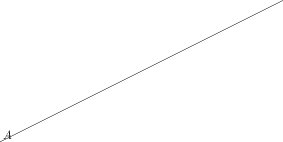

1 test
test some org feature, such as export, etc.
1.1 src
1: (save-excursion 2: (goto-char (point-min)))
In line 1 we remember the current position. Line 2 jumps to point-min.
287: /* 288: ** Closures 289: */ 290: 291: #define ClosureHeader \ 292: CommonHeader; lu_byte isC; lu_byte nupvalues; GCObject *gclist; \ 293: struct Table *env 294: 295: typedef struct CClosure { 296: ClosureHeader; 297: lua_CFunction f; 298: TValue upvalue[1]; 299: } CClosure; 300: 301: 302: typedef struct LClosure { 303: ClosureHeader; 304: struct Proto *p; 305: UpVal *upvals[1]; 306: } LClosure; 307: 308: 309: typedef union Closure { 310: CClosure c; 311: LClosure l; 312: } Closure; 313: 314: 315: #define iscfunction(o) (ttype(o) == LUA_TFUNCTION && clvalue(o)->c.isC) 316: #define isLfunction(o) (ttype(o) == LUA_TFUNCTION && !clvalue(o)->c.isC)
一些中文内容
\LaTeX
